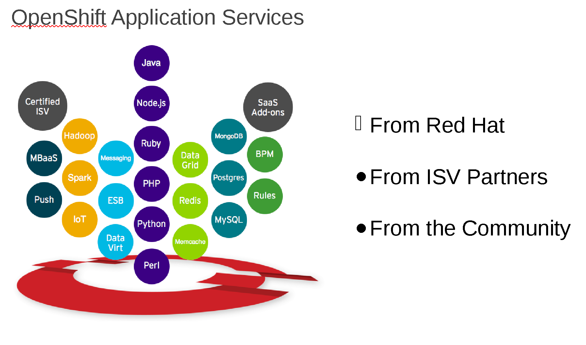
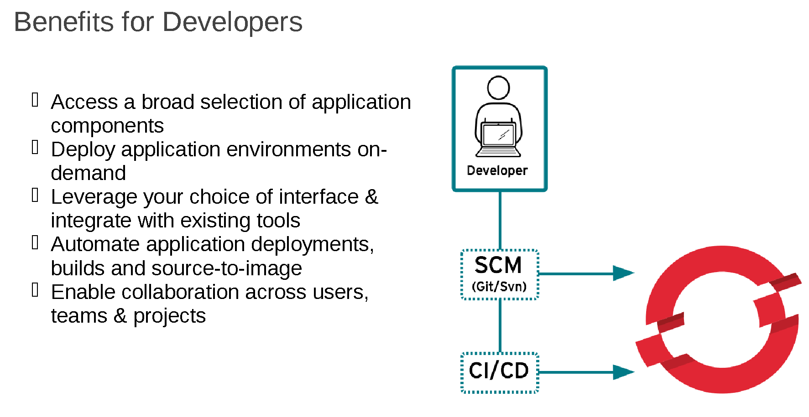

Platform as Service
PAAS
Created by Ashish Nabira
Powered by OpenShift
Agenda
- Market Dynamics
- Edgeverve's requirements
- Our Solution
- Architecture
- Use Cases
- Customers
- Q & A
Sofware is eating the world !!

Edgeverve's requirements
Self Provisioning for developers
Faster software development
Automated deployment
Continuous Integration
Containerize applications
DevOps
IT Team Silos
- Linux/Unix
- Windows
- Networking
- Storage
- Security
- Database
Each discipline comes with its own certified professionals.
Devops is the Solution

The industry’s most secure and comprehensive enterprise-grade container platform based on industry standards, Docker and Kubernetes.
Let your developers do what they do best – code
Offering a choice of programming languages and frameworks, databases and development tools allows your developers to get the job done, using the languages and tools they already know and trust.
Self service On-demand application stack
Develop your application with the language and tools you want.
Code and push
Simply perform a "git push" to deploy your code to your application.
Streamline the Delivery Process
OpenShift enables more than just deployment - it also gives you the tools you need to manage your entire development lifecycle
Flexible Capacity
With your application running in the cloud you can monitor, debug, and tune on the fly
Heavy duty tools
Powerful command line client tools and a web management console to launch and manage your applications.
Support and Services
Everything you need to become an expert with OpenShift
Product Help
24 x7 support
Training
Professional Service
Frameworks Available in Openshift
- Java, Node.js, Python, Ruby, PHP, Perl,
- MySQL, Postgres, MongoDB
- BPM,FUSE,JENKINS, etc
- Messaging, ESB,Push,MBAAS etc
Apps
OpenShift and native .Net
- OpenShift will be providing a .NET runtime distributed and supported by Red Hat and Microsoft
- Will start with version 5 of the core framework
- Version parity goal of 60 days.
Openshift features

Value

Architecture

Benefits
Benefits

Customers
RBS
KEYBANK
CISCO
FICO
AMADEUS
CA
BOEING
T-SYSTEMS
Competetion

Ashish
Why Kubernetes?
- #1 Project on github for container orchestration community wise.
- Google has invented it and using it from 15 years
- Redhat is #2 contributor to Kubernetes
- Powers the infrastructure behind Gmail, YouTube, Google Search, Google Compute Engine
- Kubernetes enjoyed more than 15 years of active development and heavy production use
Docker Swarm
- It's easy to use
- Works well with docker.
- Not proven in big environments
- Have issues with networking and persistent storage.
- Community is small, docker controls most of thecontribution/community
- Market favours less concentration of power at the orchestration layer of containers
Working with Microsoft Team Foundation Server(TFS)
- TFS is working with Jenkins for building the application
- Openshift also uses Jenkins for building the application
- Jenkins can used to bridge Openshift with TFS
- TFS 2013 provides GIT also
Useful Links
- "https://developers.openshift.com"
- "https://openshift.com"